<!DOCTYPE html>
<html lang="en">
<head>
	<meta charset="UTF-8">
	<meta http-equiv="X-UA-Compatible" content="IE=edge">
	<meta name="viewport" content="width=device-width, initial-scale=1.0">
  <link rel="preconnect" href="https://fonts.googleapis.com">
  <link rel="preconnect" href="https://fonts.gstatic.com" crossorigin>
  <link href="https://fonts.googleapis.com/css2?family=Poppins:wght@100;200;500;600&display=swap" rel="stylesheet">
  <link rel="stylesheet" type="text/css" href="css/styles.css">

	<title>1. PLANEACIÓN INVERSA DE LA  EVALUACIÓN DE LOS APRENDIZAJES</title>

</head>
<body>
	<div class="wraper">
		<!-- Menu para desktop -->
		<nav class="main-nav" id="menu">
			<article> 
				<div class="ic_caption">
					<p class="caption" > Modulo 1</p>
				</div>
				<h3>PLANEACIÓN INVERSA DE LA  EVALUACIÓN DE LOS APRENDIZAJES</h3>
			</article>
			<ul class="reset-list">
				<li><a class="text-menu" href="mod1-s1.html" id="resultados-link">Resultados de aprendizaje</a></li>
				<li><a class="text-menu" href="mod1-s2.html" id="criterios-link">Criterios de evaluación</a></li>
				<li><a class="text-menu" href="mod1-card1.html" id="ejes-link">Ejes temáticos</a></li>
				<li><a class="text-menu" href="mod1-card2.html" id="pregunta-link">Pregunta</a> </li>
				<li><a class="text-menu" href="mod1-card3.html" id="evaluacion-link">Evaluación</a> </li>
			</ul>
		</nav>

	<!-- Menu para mobile -->
	<nav class="menu-mobile">
		<button id="menu-mobile-btn" class="menu-mobile-btn">  
			
		</button>

			<ul id="menu-list" class="menu-mobile-list-off">
				<li class="ic_caption"><p class="caption" > Modulo 1</p></li>
			<li class="menu-mobile-modtitulo">PLANEACIÓN INVERSA DE LA  EVALUACIÓN DE LOS APRENDIZAJES</li>
			<li><a class="text-menu" href="mod1-s1.html" id="resultados-link">Resultados de aprendizaje</a></li>
			<li><a class="text-menu" href="mod1-s2.html" id="criterios-link">Criterios de evaluación</a></li>
			<li><a class="text-menu" href="mod1-card1.html" id="ejes-link">Ejes temáticos</a></li>
			<li><a class="text-menu" href="mod1-card2.html" id="pregunta-link">Pregunta</a> </li>
			<li><a class="text-menu" href="mod1-card3.html" id="evaluacion-link">Evaluación</a> </li>
		</ul>
	</nav>


	<main class="content_s1">
		
		 
		<section class="mod_header">
			<h2> ¿Qué es la planeación inversa dela evaluación de los aprendizajes?</h2>
			
		</section>
<section class="content_intro">
	<p>La planeación inversa de la evaluación está sustentada en un enfoque centrado en el aprendizaje; este modelo propone una preparación hacia atrás con tres fases, de tal manera que, se cambie la lógica de la secuencia tradicional que se visualiza a continuación:
	</p>
	
</section>

		<article class="nav_interna">
			<a class="a_mod1" href="index.html"> Atrás</a>
			<a class="a_mod1" href="mod1-s2.html"> Siguiente</a>
		</article>

	</main>
</div>


<script>
	var menuBtn = document.getElementById("menu-mobile-btn");
  var menuList = document.getElementById("menu-list");

  menuBtn.addEventListener("click", openMenu);
  function openMenu() {
    menuList.classList.toggle("menu-mobile-list-on")
  }

  var homeLink = document.getElementById("resultados-link");
  homeLink.addEventListener("click", closeMenu);
  function closeMenu() {
    menuList.classList.toggle("menu-mobile-list-on")
  }
  var projectsLink = document.getElementById("criterios-link");
  projectsLink.addEventListener("click", closeMenu);
  function closeMenu() {
    menuList.classList.toggle("menu-mobile-list-on")
  }
  var aboutLink = document.getElementById("ejes-link");
  aboutLink.addEventListener("click", closeMenu);
  function closeMenu() {
    menuList.classList.toggle("menu-mobile-list-on")
  }
  var contactLink = document.getElementById("pregunta-link");
  contactLink.addEventListener("click", closeMenu);
  function closeMenu() {
    menuList.classList.toggle("menu-mobile-list-on")
  }
  var contactLink = document.getElementById("evaluacion-link");
  contactLink.addEventListener("click", closeMenu);
  function closeMenu() {
    menuList.classList.toggle("menu-mobile-list-on")
  }
</script>
</body>
</html>